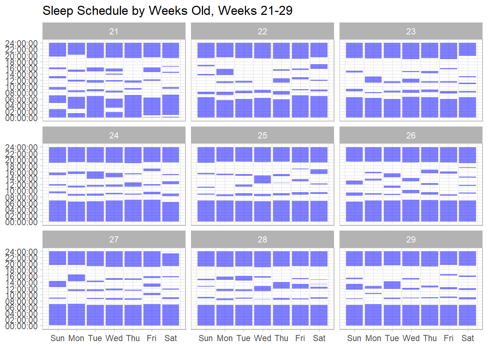

I am a father of two sons; one 4.5 years old, and the other is but a few months. This may seem weird, but even though I went through everything with my first son… I have complete amnesia about what was normal, what napping schedules were like, and such-like at this age.
Fortunately, we used a baby tracker, which allowed me to export a csv. What a golden opportunity for some data visualization!
# A tibble: 6 × 3
Baby Time `Duration (min)`
<chr> <chr> <dbl>
1 First-Born 10/23/20 4:30 AM 60
2 First-Born 10/23/20 6:00 AM 55
3 First-Born 10/23/20 8:31 AM 39
4 First-Born 10/23/20 11:13 AM 28
5 First-Born 10/23/20 3:49 PM 14
6 First-Born 10/23/20 7:16 PM 298
Hmmm, okay. So a few issues to deal with:
the Time column is character data, instead of POSIXct
you have durations, instead of start times and end times
What I would love is a graph of my son’s sleep schedule, by week, that I could match up with our second child. So let’s see what we can do.
Creating a tidy time dataframe
The first thing to do is make sure that the data is in time. R has many functions, which you adapt to the way that the data looks. Here, the data is in month/day/year hour:minutes, so we can use mdy_hm as the function.
For the graph I’m imagining, where rectangles on a plot where show the time sleeping, my son sleeping through the night will actually be two rectangles; one that goes in the evening until midnight, and then one the following day from midnight until he wakes up.
This show up in the dataset as ones where the day of starttime and endtime are different.
Code in R
childnight <- child |>filter(day(starttime) !=day(endtime))## now make these into two different datasets. The evening dataset and the morning datasetchildevening <- childnight |>mutate(endtime=make_datetime(year(starttime), month(starttime), day(starttime), hour=23, min=59, sec=59))childmorning <- childnight |>mutate(starttime=make_datetime(year(endtime), month(endtime), day(endtime), hour=0, min=0, sec=0))## now filter them out and bind back inchild <- child |>filter(day(starttime) ==day(endtime)) |>bind_rows(childevening,childmorning)
Now we have a dataset! Next problem.
Translating data into weeks old
Because my two sons were not born on the same day (or even the same month), looking at the data by date is not going to be helpful; ideally, I want to look at it in how many weeks old they are.
Code in R
birth <-mdy("05-30-20")
Using this birthdate, I can find the difference in time between the times sleeping and his birth. Using the floor function is akin to rounding down, which will allow me to see how many weeks old the baby was when sleep occurred.
Ideally, I want these dates converted into what week old, and what day of that week, factored for a plot that goes from midnight to midnight. My son was born on a Sunday, so this can go from Sunday to Saturday.
Code in R
child <- child |>mutate( ## this tells you how many weeks oldweeksold=floor(difftime(starttime, birth, units="weeks")),## this translates the dates into days of the weekdayweek=wday(starttime,label=TRUE, ##labels over numbers,abbr=TRUE, ##abbreviated,week_start=7## Sunday ),starthour=hm(paste0(hour(starttime),":",minute(starttime))),endhour=hm(paste0(hour(endtime),":",minute(endtime)))) |>select(-c(starttime,endtime))head(child)
Notice that the y axis is in seconds since midnight, and that the x axis is in days since Sunday. Let’s work with our scales to make these right
Code in R
BREAKS <-c(0:12) *7200## there are 3600 seconds in an hour, so this should make breaks every 2 hourschild |>filter(weeksold %in%c(21:29)) |>ggplot() +geom_rect(mapping=aes(xmin=as.numeric(dayweek)-.45,xmax=as.numeric(dayweek)+.45,ymin=starthour,ymax=endhour),fill="blue", alpha=.5) +facet_wrap(~weeksold) +scale_y_time(breaks=BREAKS) +scale_x_continuous(breaks=seq_along(levels(child$dayweek)),labels=levels(child$dayweek) ) +labs(title="Sleep Schedule by Weeks Old, Weeks 21-29") +theme_light()

A final plot
A graph to be proud of, and a reminder that my first son was a far better sleeper at night than my current…
Citation
BibTeX citation:
@online{russell2025,
author = {Russell, John},
title = {Working with {Time} to Battle {Baby} {Amnesia}},
date = {2025-02-04},
url = {https://drjohnrussell.github.io/posts/2025-02-04-plotting-sleep-intervals/},
langid = {en}
}
![]()